SHAPE POSTER
VD1
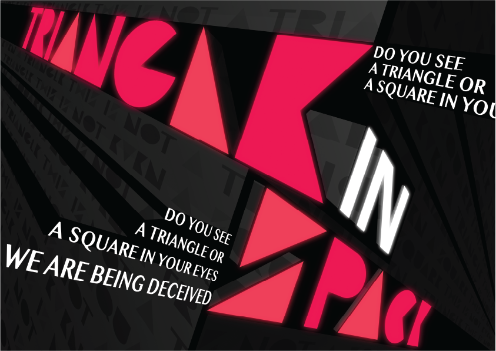
Triangle in Space
원근감으로 인해 사각형이 삼각형처럼 보이는 것을 표현했다.
BOUND BOOK OF SCRAPS
VD1
책의 구성요소
10권의 책의 책등, 본문, 이미지, 제목 타이틀별로 구분하여 정리하였다.
GENERATIVE SYSTEME
VD1
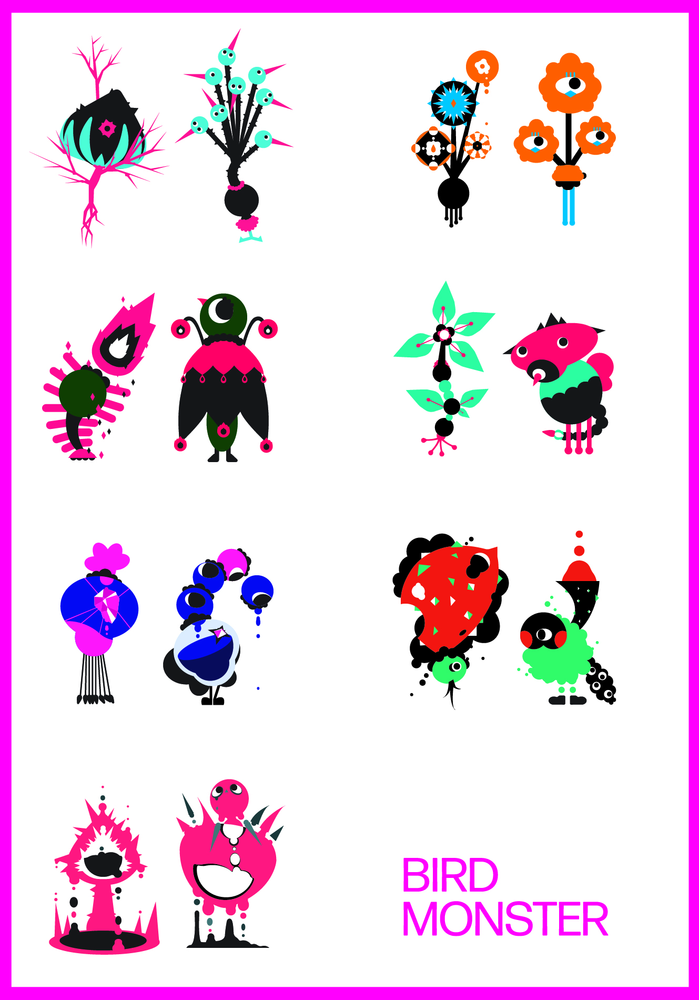
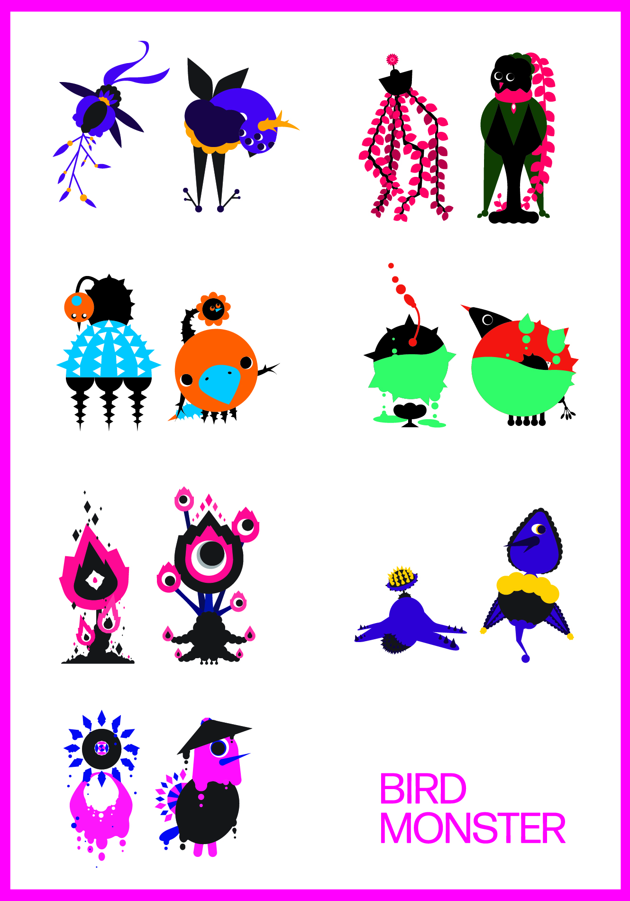
BIRD MONSTER
챗GPT에게 세상에 존재하지 않는 꽃의 종류와 그 꽃과 결합한 새의 외형적 특징을 물어본 뒤 이미지로 구현했다.
구현된 이미지를 도감으로 제작할 때, 총 14개의 새로운 꽃의 형상과 그 꽃의 형상에서 탄생한 14마리의 새를 수록했다.
5 PATTERN POSTERS
VD2

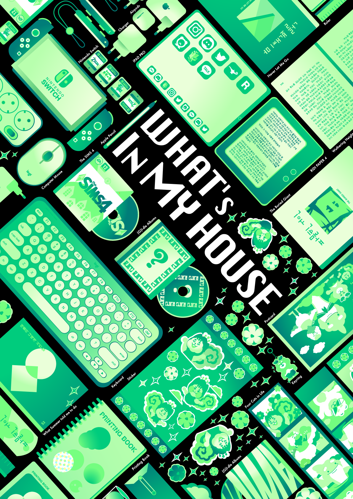
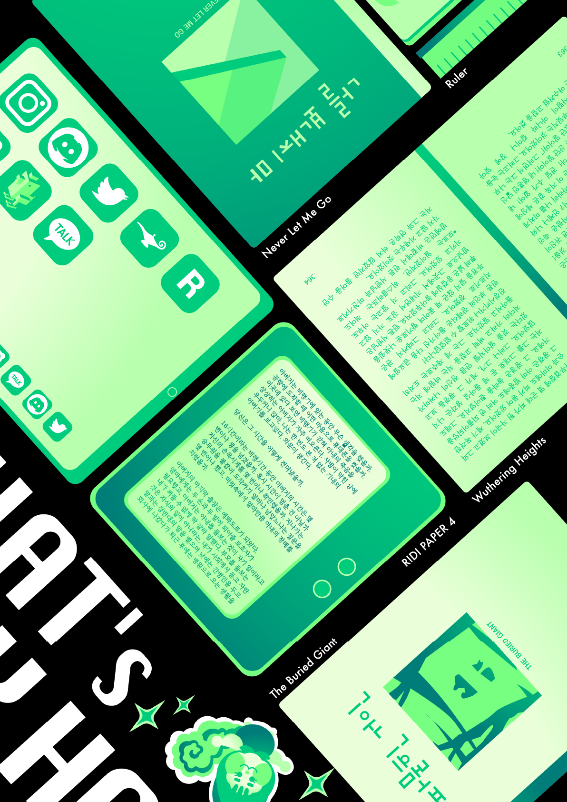
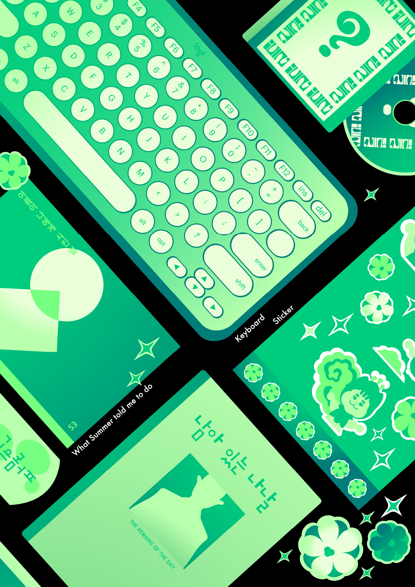
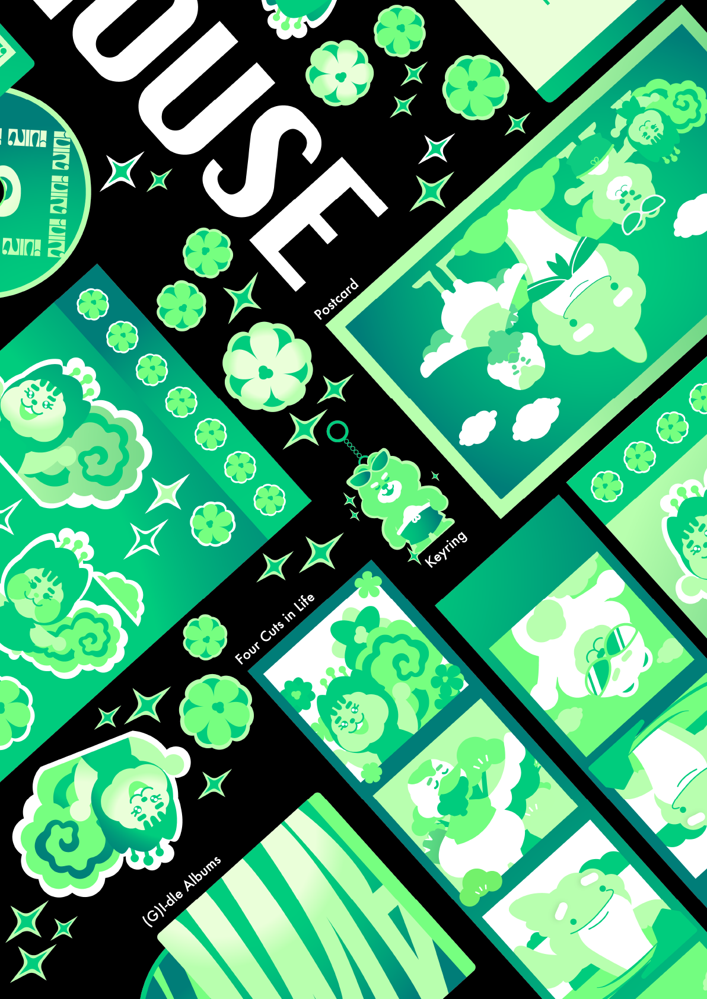
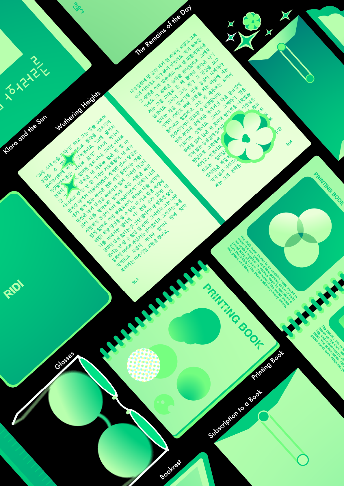
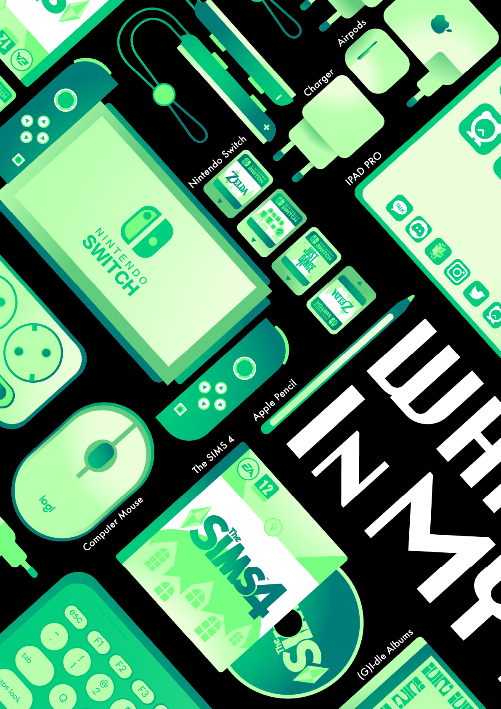
What's In My House
방 안에서 나를 행복하게 만들어 주는 물건들을 한눈에 볼 수 있게 펼쳐보았다.
EXHIBITION IDENTITY
VD2
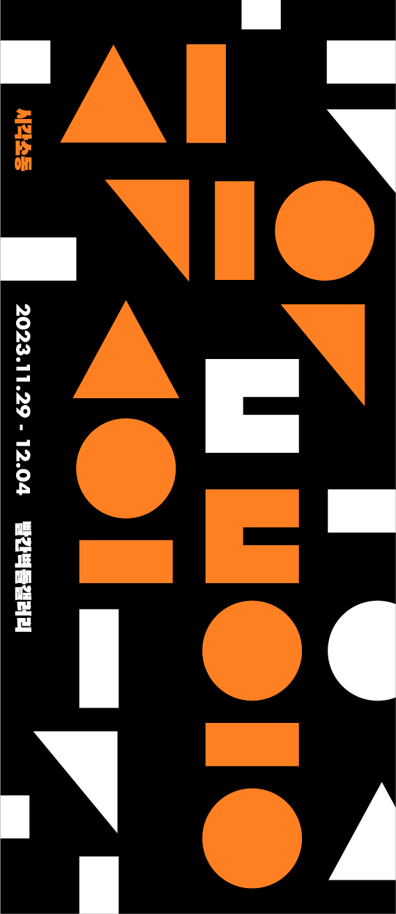
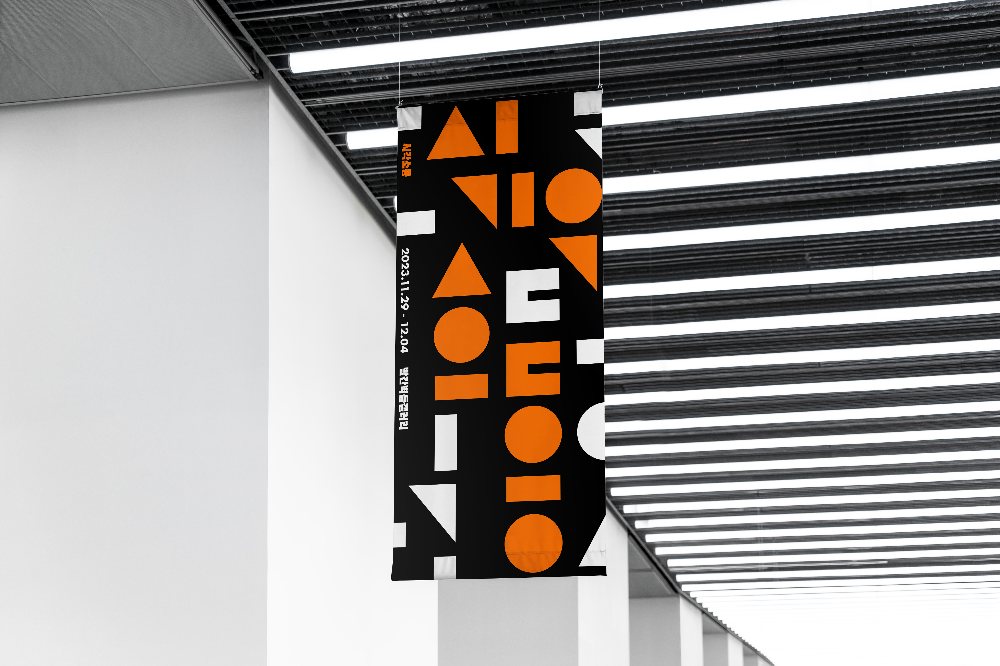
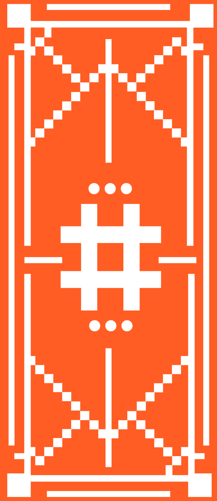
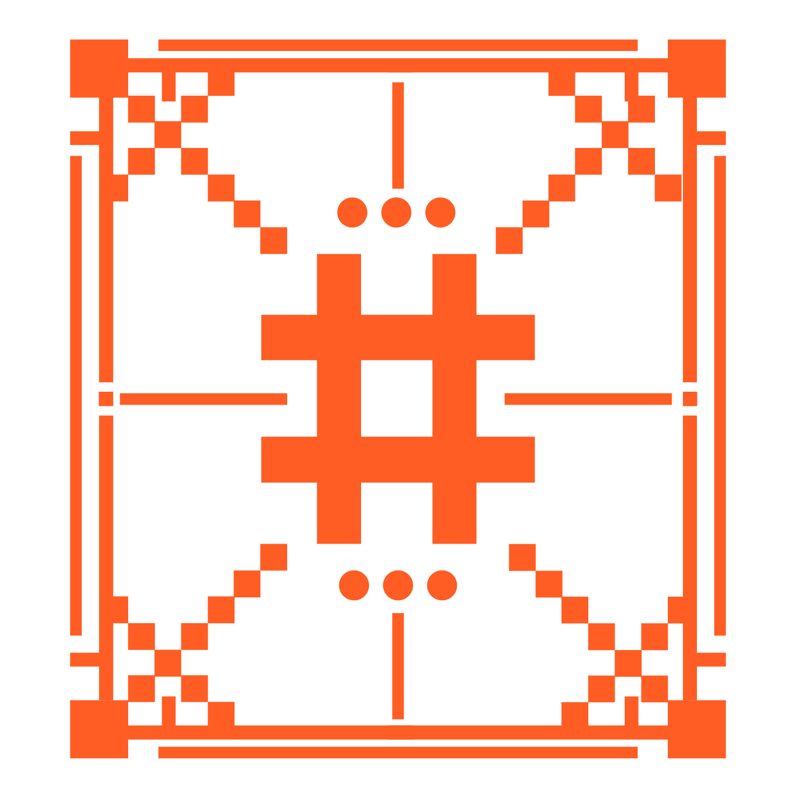

abcd: abcd의 cd(시디)를 강조하기 위해 abcd 이용해 시디를 상징할 수 있는 연필을 만들고 그 사이에서 시디의 유대감을 나타냈다.
Play cd!: 시디가 신나게 노는 듯한 느낌을 cd와 음악의 느낌을 통해 나타냈다.
SELF IDENTITY
VD2
이 위치로 직접 가서 확인해보세요!
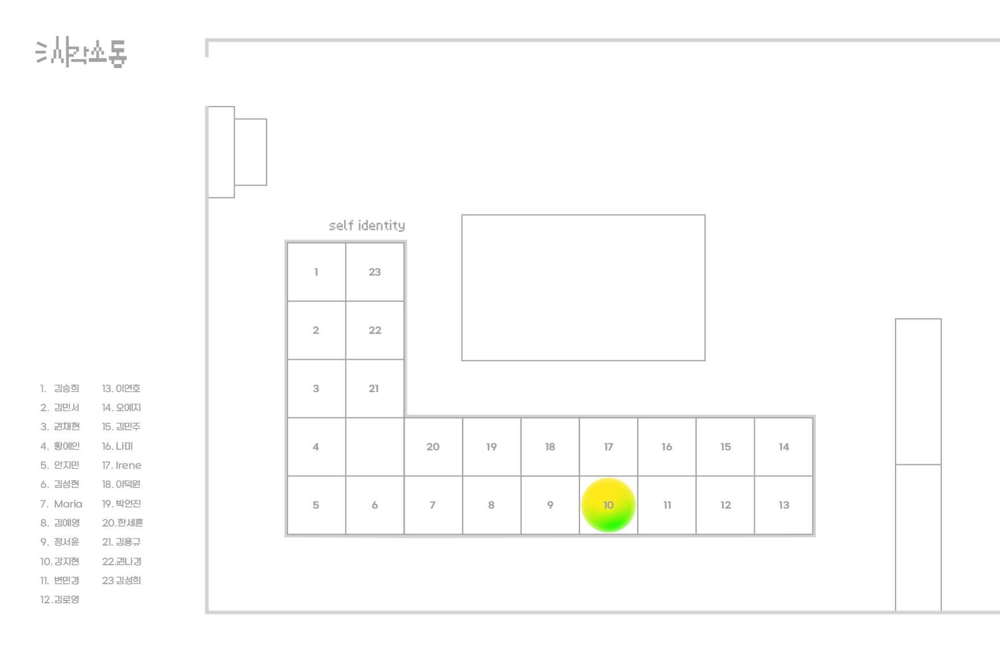